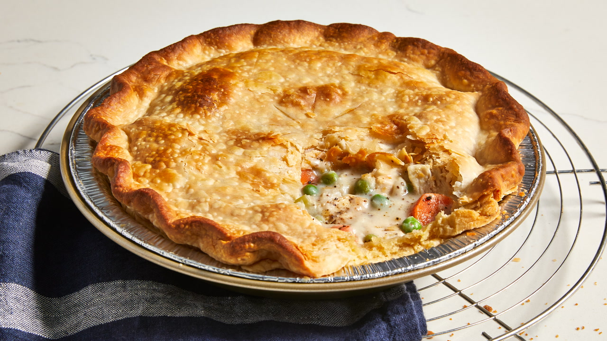

Chicken Pot Pie

Ingredients
- Chicken
- Vegetables
- Butter and Flour
- Seasonings
- Broth and Milk
- Pie Crusts
How to Make Chicken Pot Pie
- Boil the cubed chicken with the carrots, peas, and celery for about 15 minutes. Drain and set aside. Cook the onions in butter until they're translucent, then stir in the flour and seasonings. Add the chicken broth and milk and simmer until the filling is thick.
- Place the chicken-vegetable mixture in an unbaked pie crust. Pour the chicken broth mixture over it. Cover with the top crust, seal the edges, and cut slits in the top to allow the steam to escape. Bake until the pastry is golden brown and the filling is bubbly.
- Allow the pie to cool completely before storage. Wrap the cooled pie tightly in aluminum foil and refrigerate for three to five days. Reheat in the oven or in short bursts in the microwave.
Home